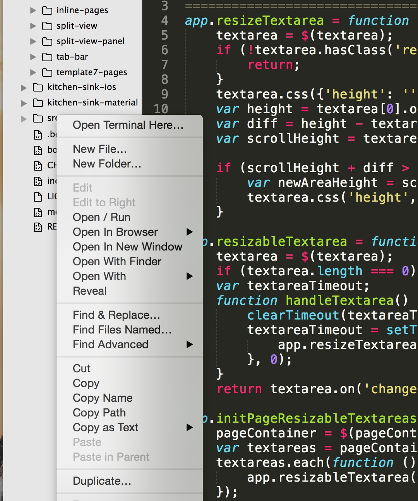
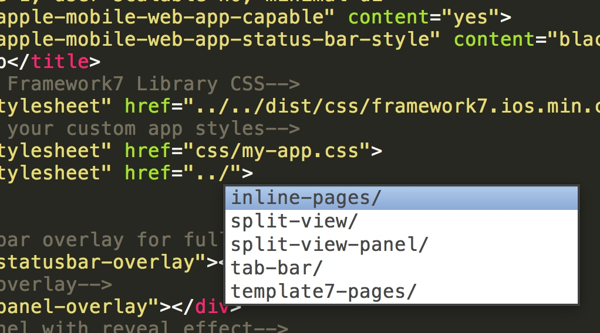
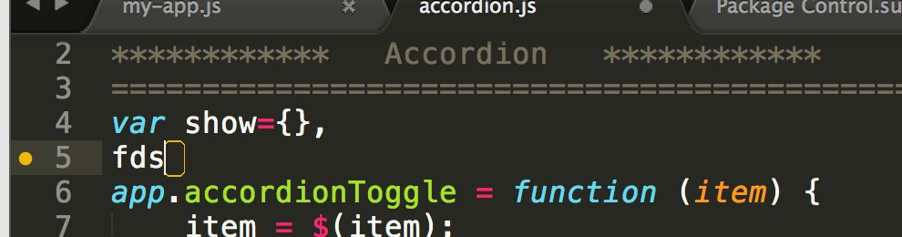

Package Control
包管理器，安装这个插件之后可以管理sublime的所有的扩展包的安装和卸载
安装方法如下，打开console窗口（CTRL+`/views>show console）将下面这段代码copy进去敲enter即可1
import urllib.request,os,hashlib; h = '2915d1851351e5ee549c20394736b442' + '8bc59f460fa1548d1514676163dafc88'; pf = 'Package Control.sublime-package'; ipp = sublime.installed_packages_path(); urllib.request.install_opener( urllib.request.build_opener( urllib.request.ProxyHandler()) ); by = urllib.request.urlopen( 'http://packagecontrol.io/' + pf.replace(' ', '%20')).read(); dh = hashlib.sha256(by).hexdigest(); print('Error validating download (got %s instead of %s), please try manual install' % (dh, h)) if dh != h else open(os.path.join( ipp, pf), 'wb' ).write(by)
接下来得插件安装，
1.打开命令面板ctrl+shift+p
2.输入ip,enter
3.输入插件名称敲击enter
Emmet
前身事大名鼎鼎的zen coding，仅仅需要一行代码就能快速生成html代码。简单的语法既可以生成负责html css代码(点击标题，可以学习emmet语法)，
SideBar Enhancements
这个插件改进了侧边栏，增加了许多功能：将文件移入回收站，在浏览器中浏览，将文件复制到剪切板。

AutoFileName
文件名称自动补全插件

CSS3
css3的语言环境，也会对一些css3的属性惊醒提示
DocBlockr
文本注释插件，再js方法上敲击/**+ enter即可变成下面的代码1
2
3
4
5/**
* [ description]
* @param {[type]} item [description]
* @return {[type]} [description]
*/
JsFormat
javascript格式化插件，安装之后选择文本ctrl+alt+f可以格式化指定文本
SublimeCodeIntel
多种语言提示，代码自动补齐，快速跳转到变量定义，在状态栏显示函数快捷信息等
它支持的语言有：PHP, Python, RHTML, JavaScript, Smarty, Mason, Node.js, XBL, Tcl, HTML, HTML5, TemplateToolkit, XUL, Django, Perl, Ruby, Python3.
SublimeLinter
代码检查插件，可以提示你的编码错误，但是需要安装子包，例如
1.javascript语法检查 SublimeLinter-jshint这个包是必须得；
2.css语法检查 sublimeLinter-csslint

SublimeLinter-csslint
配置sublimelinter，的css语法检查插件
SublimeLinter-jshint
配置sublimelinter，的js语法检查插件
Tag
HTML/XML 标签缩进、补全和校验；
Terminal
打开控制台插件，安装后配置上下面的快捷键即可1
{ "keys": ["command+shift+m"], "command": "open_terminal" },`
TrailingSpaces
多余空格标记插件，会标记每行多余的空格，加入下边的快捷键配置即可一次删除1
{ "keys": ["command+shift+t"], "command": "delete_trailing_spaces" },
主题包
sublime本身的外表就已经很好看了，如果大家对颜值有特殊要求的，可以点击这里
各种framework包
- jQuery jquery的代码补全包；
- Angular angular的代码补全及常用指令提示；
- less less的环境高亮
- saas sass的语法环境高亮，以及代码提示
….